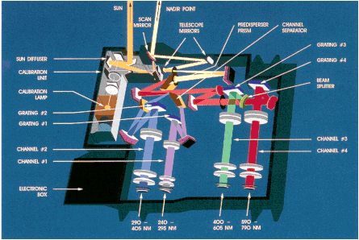

GOME는 ESA에서 개발되었으며 태양동기궤도에서 오존, 수증기, HCHO, OClO, 구름, 에어로졸 등을 관측한다. 1995년 4월 21일 발사한 ERS-2 미션(GOME-1)과 2006년 10월 19일 발사한 EUMETSAT의 MetOp-A(GOME-2)에 탑재되어 운용 중이다.
|  |
그림 2.1.1. GOME 탑재체 관측원리 및 상상도 |
GOME 탑재체는 연직 방향 스캔 방식의 자외선/가시광선 영역의 분광기로 250nm~790nm의 영역에서 4 채널로 나뉘어 관측한다. 분광 해상도는 자외선에서 0.2nm, 가시광선에서 0.4nm를 갖는다.
|
그림 2.1.2. GOME 탑재체 내부 모습 |

GOME-1의 경우에는 3개의 픽셀로 320×40㎢의 해상도를 갖고 960㎞의 관측폭을 한 번에 촬영한다. GOME-2의 경우에는 이보다 더 좋은 80× 40㎢의 해상도를 갖고 전 지구를 3일 만에 촬영한다.
|
그림 2.1.3. GOME 탑재체의 관측 원리 |

분광기는 1차 분광 프리즘을 가진 이중 단파장 분광기(double-monochromator)와 4개의 홀로그램 기반 회절격자(holographic-grating)를 사용하였다. GOME-1의 무게는 50Kg, 소비전력은 50W이며 자료 전송률은 40Kbps이다. 또한, GOME-2의 무게는 73Kg, 소비전력은 42W, 데이터 전송률은 400Kbps이다.
표 2.1.1. GOME 탑재체 관측 채널 | |||
Channel | Wavelength [nm] | Integration time [sec] | Spectral resolution [nm] |
1A | 237-283 | 1.2 | 0.20 |
1B | 283-316 | 1.5 | 0.20 |
2 | 311-405 | 1.5 | 0.17 |
3 | 405-611 | 1.5 | 0.29 |
4 | 595-793 | 1.5 | 0.33 |